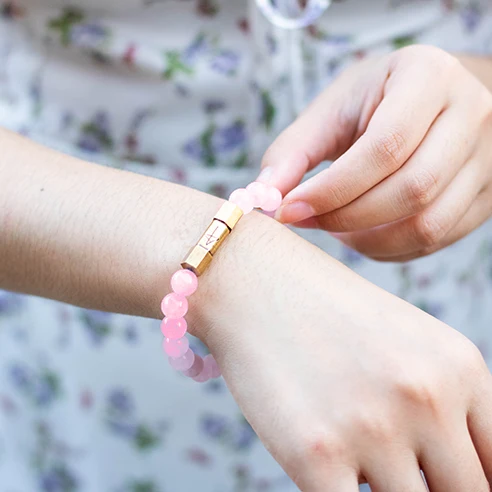
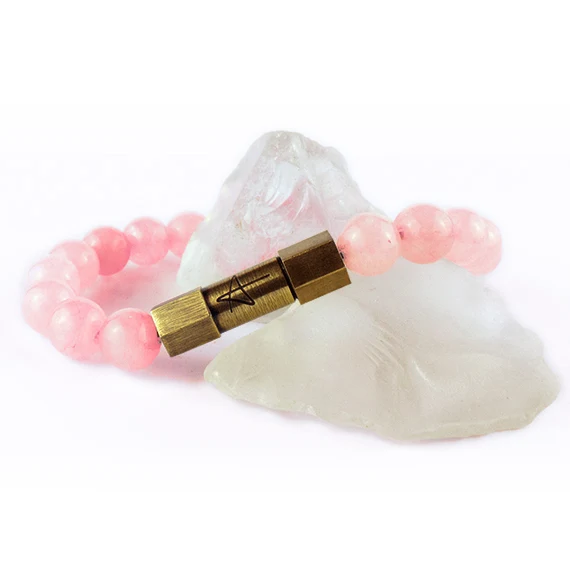
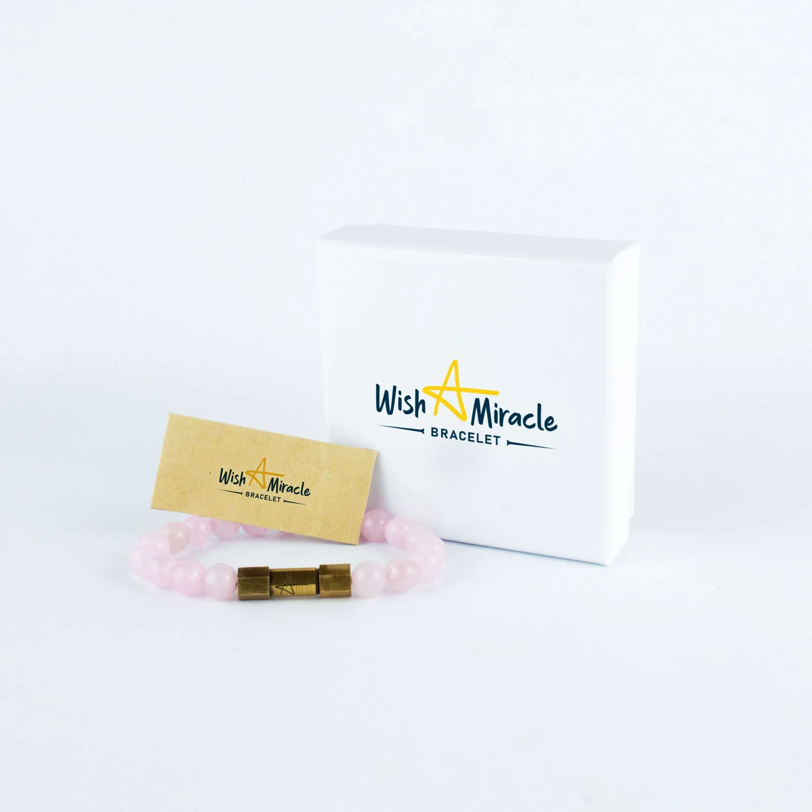

Wear this on your left wrist when you're ready to receive love again
One wish, kept inside your Heart Cleanser Love Charm. Let me show you what to do before you put it on.
{{ subscriber.first_name | capitalize }} —
Evelyn here.
Your left wrist, dear.
But I don't mean any bracelet you happen to have in your jewellery box.
I mean the Heart Cleanser Love Charm.
And before you put it on, there is something I want you to place inside.
One wish, dear.
The one you would make about your love life if you didn't have to explain it to anybody.
Keep it in mind as you read. In a moment, I'll show you the small wish capsule built into this charm—and how to carry that wish on your left wrist.
Perhaps you already know what you would put inside it.
Another chance with someone you still miss. A new love you can feel at ease with. Affection that comes back to you as readily as you give it.
You don't have to decide on the words just yet.
First, let me explain the wrist.
Why the left?
In a crystal-wearing practice that treats the left as the receiving side, a bracelet worn here carries an inward intention: what you are inviting into your own life.
That's the symbolism we're using with this love charm.
Look at your left wrist for a moment, dear.
Picture your Heart Cleanser Love Charm there, with your wish tucked inside. Each morning, as you slip it on, you give yourself a few quiet seconds to name what you want to receive.
Affection. Tenderness. A love in which someone makes room for you, too.
Then you take that intention into your day, on the hand that reaches for your phone, opens your door, and rests beside you at the table.
Something private, close enough to touch.
Now let me show you what makes this particular bracelet part of the ritual.
Why this pink quartz bracelet?
The Heart Cleanser Love Charm is made with pink quartz, and in this ritual, those stones stand for the tenderness you want to welcome into your life.

But there is another part of this charm I want you to look at closely.
A wish capsule that holds something only you can choose
This Heart Cleanser Love Charm includes a capsule where you can place your wish.

That is what I meant at the beginning, dear.
You put your wish into the bracelet itself.
Write it down on a small piece of paper that fits inside the capsule. Choose words you would be glad to carry with you.
Perhaps:
“I wish for a love in which I feel chosen.”
Or:
“I wish for the courage to welcome someone close again.”
Read your words once before you place them inside. Make sure they say what you want. You can keep them entirely to yourself.
Then close the capsule and slip the charm onto your left wrist.
Pink quartz. Your receiving wrist. Your own wish held inside the charm.
An ordinary bracelet in your jewellery box doesn't arrive with that personal meaning. With this one, you create it before the first time you wear it.
Later, when your fingers find the capsule, you know exactly what you've placed there.
The wish has your words in it.
The word I want you to keep is “too”
Once your wish is inside, hold the charm in your palm and say these seven words, {{ subscriber.first_name | capitalize }}.
“I am ready to receive love, too.”
Does it come easily?
Or do you find yourself adding conditions?
Once he understands. Once you look different. Once you've made yourself easier to love. Once you've done enough to deserve it.
You can put so much of your life into those conditions, dear.
Another chance given. Another disappointment explained away. Another evening spent being understanding while your own needs wait their turn.
That's why this is the sentence I want you to use with your charm.
Let “too” mean that your needs get a place today.
Let it mean you can enjoy being asked how you are. You can accept affection. You can want someone who follows through.
You can love someone and still pay attention to whether you feel loved in their company.
Your Heart Cleanser Love Charm

Your charm brings together the whole ritual: your wish placed inside its capsule, pink quartz held in your palm, and the bracelet worn on your left wrist.
Keep this bracelet for that intention. When you put it on in the morning, let it be the moment you make room for the affection you want to receive.
The capsule gives your wish a place. The pink quartz carries the tenderness we've chosen as this ritual's meaning. Your left wrist brings them together on the receiving side.
Get your Heart Cleanser Love Charm here.
When yours arrives, take a quiet moment before putting it on for the first time.
Set the charm in front of you and write the wish you want to place inside its capsule.
Think about what you would like love to feel like in your life.
Be specific, dear.
Perhaps you'd like to feel considered. To make plans with someone and trust that they'll be there. To speak honestly without spending the rest of the evening wishing you'd asked for less.
Place your written wish inside the capsule and close it. Hold the charm in your left palm, rest your right hand over it, and say:
“I am ready to receive love, too.”
Slip the bracelet onto your left wrist.
That's how you begin.
Take the intention with you
Later, you may notice the pink quartz on your left wrist as you reach for your phone.
Before you open the same conversation again, touch the wish capsule. Remember the words you placed inside.
Or someone might offer you a kindness, and you catch yourself about to wave it away.
Let yourself receive it. Say thank you. Stay with the feeling for a moment.
These are the places to bring your ritual into your life. Ordinary moments in which your own heart deserves your attention.
Your wish stays inside the capsule as you wear the charm. You can return to those words wherever the day takes you.
Get your Heart Cleanser Love Charm here.
You can begin while you still miss him
If a particular face came to mind while you were reading, dear, you don't have to pretend it didn't.
Bring your feelings honestly to the ritual.
You may still want another chance with him. You may be curious about someone new. You may simply want to feel comfortable letting someone close again.
Begin where you are.
The words leave room for that: “I am ready to receive love, too.”
They leave room for your wishes, and for you to notice how the people in your life actually treat you.
Tomorrow morning, picture it on your left wrist
Before the messages. Before the errands. Before you begin thinking about what everyone else needs from you.
A quiet moment with your charm in your left palm.
Your wish already tucked inside its capsule.
Seven words spoken for yourself.
Then the bracelet on your wrist, your written wish going with you into the rest of your day.
If that is how you'd like to begin your mornings, get your Heart Cleanser Love Charm here.
I'm on your side in this, dear.
— Evelyn
P.S. Have you thought of the wish you would put inside, dear? Keep those words. When your Heart Cleanser Love Charm arrives, write them down, place them in its capsule, and wear it on your left wrist. Get your Heart Cleanser Love Charm here. |